.png)
Узнайте, как использовать эту функцию бета-версию, но будьте осторожны при ее применении.
С помощью регуляторов громкости в игровом процессе можно задать физические области, в которых к звукам будут применяться эффекты в зависимости от положения слушателя.
Из этого руководства вы узнаете, как настроить базовую громкость звука в игровом процессе с помощью компонента Reverb, чтобы имитировать отражение звуковых волн в пространстве.
Предварительные условия
- Совершенно новый проект, созданный с использованием шаблона от первого лица.
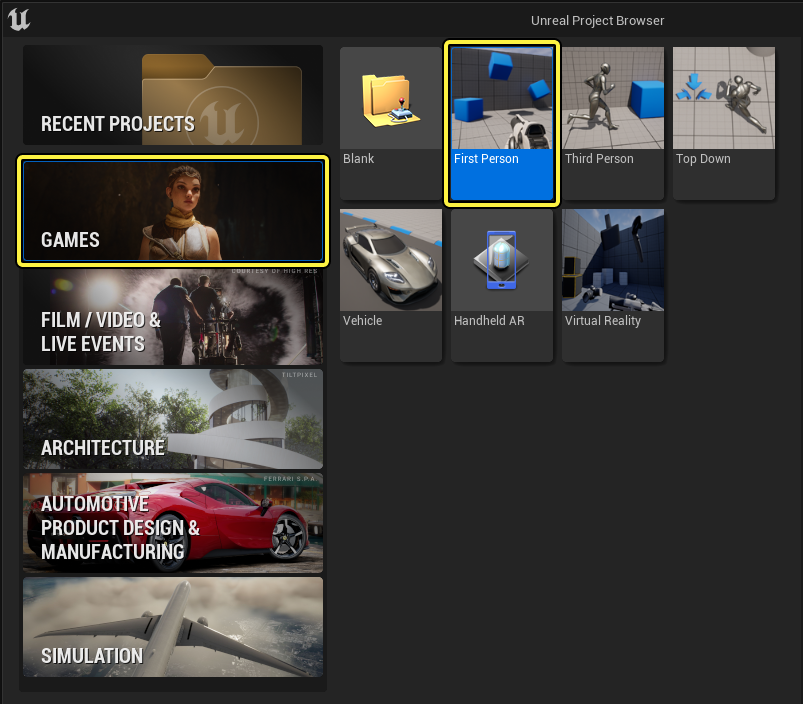
- Плагин Громкости звука в игровом процессе по умолчанию отключен. Чтобы включить его, откройте панель Плагинов, выбрав Правка > Плагины, используйте строку поиска, чтобы найти плагин, а затем установите соответствующий флажок.
.png)
1 — Настройте звуковой класс
Для работы аудио в игровом процессе требуются ресурсы Sound Wave в составе правильно настроенного звукового класса.
Дополнительную информацию о звуковых классах см. в разделе Звуковые классы.
- В шаблоне от первого лица есть единственная звуковая волна, которая воспроизводится, когда вы стреляете из оружия. Используя Content Browser, перейдите на страницу Content/FPWeapon/Audio.
- Дважды щелкните звуковую волну FirstPersonTemplateWeaponFire02, чтобы открыть панель Сведений о звуковой волне.
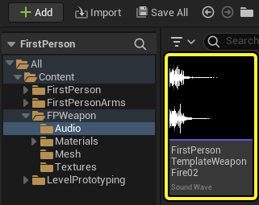
- Щелкните раскрывающийся список для Звук > Класс.
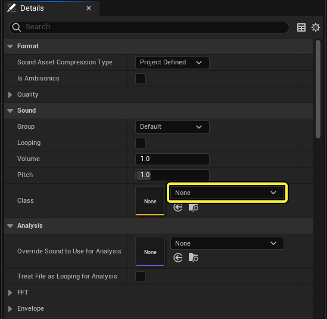
- Выберите Класс звука в контекстном меню, чтобы создать новый ресурс.
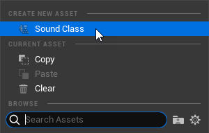
- Введите имя для нового класса звука и сохраните его в своей папке с содержимым.
- Дважды щелкните на вашем новом классе звука, чтобы открыть панель Сведений о классе звука.
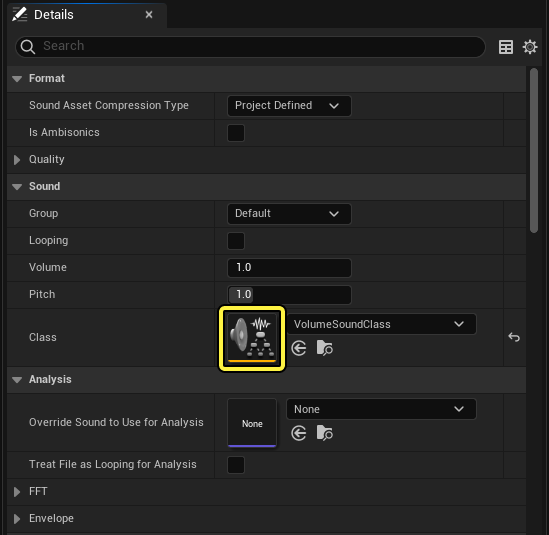
- Включить Маршрутизацию > Применить громкость окружения, чтобы разрешить использование звуков, связанных с этим классом звука, с громкостью звука игрового процесса.
- Введите 1.0 для субмикширования > Объем отправки 2DReverb по умолчанию, чтобы отправить 100% звука из класса Sound в субмикс Master Reverb.
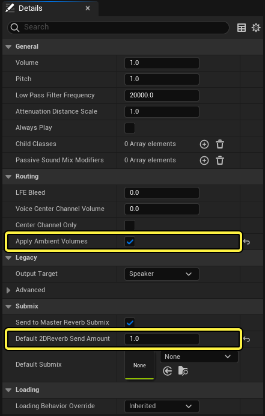
- Сохраните класс звука и ресурсы звуковой волны.
2. Установите громкость звука в игре
- Разместите объем аудиоигры в своем уровне, используя панель "Разместить актеров" или нажав "Быстрое добавление" на панели инструментов редактора уровней и выбрав "Громкости" > "Объем аудиоигры". ...................."
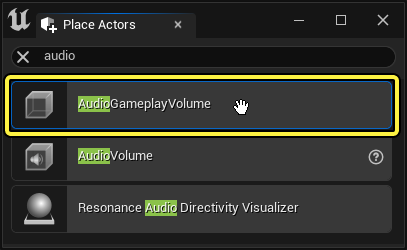
- Расположите объект на уровне так, чтобы ваш персонаж мог входить в него и выходить из него, например, прямо над BP_Pickup_Rifle.
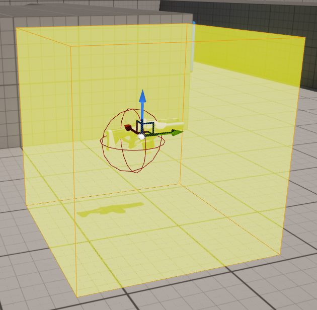
3 — Добавьте компонент реверберации
Функциональность громкости звука в игровом процессе зависит от компонентов. В каждом звуковом объеме может быть любое количество таких компонентов, которые влияют на звуки, происходящие внутри или за пределами объема, относительно слушателя. В этом примере добавьте в свой объем компонент реверберации, чтобы звук выстрелов из оружия отражался от стен, пока игрок находится внутри.
- Выбрав громкость звука в игровом процессе, нажмите кнопку Добавить компонент на панели Сведений.
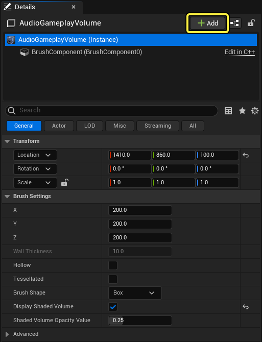
- Выберите компонент Реверберации в разделе Громкости звука в игровом процессе контекстного меню.
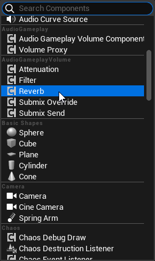
- Введите 1.0 для Реверберации > Громкости, чтобы увеличить громкость эффекта.
- Введите 0.0 для Реверберации > Время затухания, чтобы применить эффект сразу при наборе громкости.
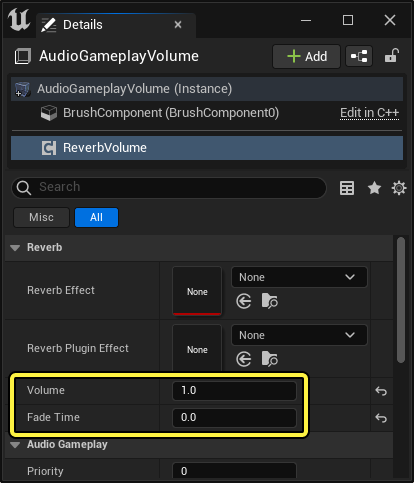
4. Настройте эффект реверберации
Компонент реверберации применяет свой эффект с помощью ресурса Эффект реверберации, поэтому вам нужно его создать.
- Выбрав новый компонент Reverb, щелкните раскрывающийся список для Reverb > Эффект реверберации.
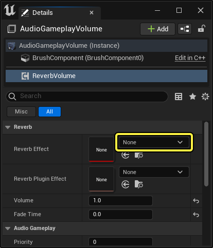
- Выберите Эффект реверберации в контекстном меню, чтобы создать новый ресурс.
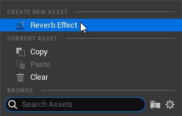
- Введите имя для нового эффекта реверберации и сохраните его в своей папке с содержимым.
- Дважды щелкните на вашем новом эффекте реверберации, чтобы открыть панель Сведений об эффекте реверберации.
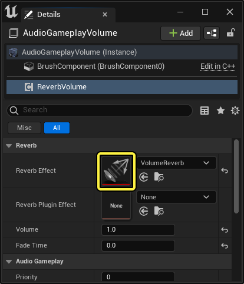
- Введите 1.0 для поздних отражений > Усиления, чтобы усилить сигнал и сделать эффект более отчетливым.
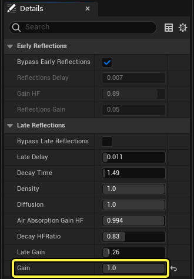
- Сохраните ресурс с эффектом реверберации.
5 - Играть
- Нажмите кнопку Воспроизвести уровень на панели инструментов редактора уровней.
- Переместите своего персонажа в BP_Pickup_Rifle и возьмите оружие.
- Щелкните левой кнопкой мыши, чтобы выстрелить, находясь внутри или за пределами области, и послушайте, как меняется звук.
6 — самостоятельно!
Теперь, когда вы создали базовую громкость для игрового процесса, подумайте о том, чтобы усовершенствовать ее.
Попробуйте добавить в новую или существующую громкость следующие типы компонентов:
- Submix Override: добавляет цепочку эффектов Submix к звуковому субмиксу. Когда слушатель входит в зону громкости, этот эффект применяется ко всем звукам, независимо от того, находятся ли они внутри или за пределами зоны громкости.
- Submix Send: отправляет звук в звуковой субмикс. Этот эффект применяется к звукам внутри зоны громкости и может быть настроен на применение как внутри, так и за пределами зоны громкости.
- Аттенюация: интерполирует текущую громкость (громкость) звука до целевого значения (громкости). Вы можете настроить эффект так, чтобы он применялся к звукам внутри помещения, когда слушатель находится снаружи, или наоборот.
- Фильтр: применяет к звуку фильтр нижних частот. Вы можете настроить эффект так, чтобы он применялся к звукам внутри помещения, когда слушатель находится снаружи, или наоборот.
Чтобы услышать эффекты некоторых типов компонентов, таких как Attenuation и Filter, вам понадобится хотя бы один звук, расположенный на некотором расстоянии от игрока. В шаблоне от первого лица по умолчанию нет звуков, настроенных таким образом, поэтому потребуется дополнительная работа.
Есть много способов это сделать, но для начала попробуйте импортировать файл с фоновым звуком в качестве ресурса Sound Wave, а затем разместить его внутри или снаружи области на уровне. Подробнее о том, как импортировать аудиофайлы, см. в разделе Импорт аудиофайлов.